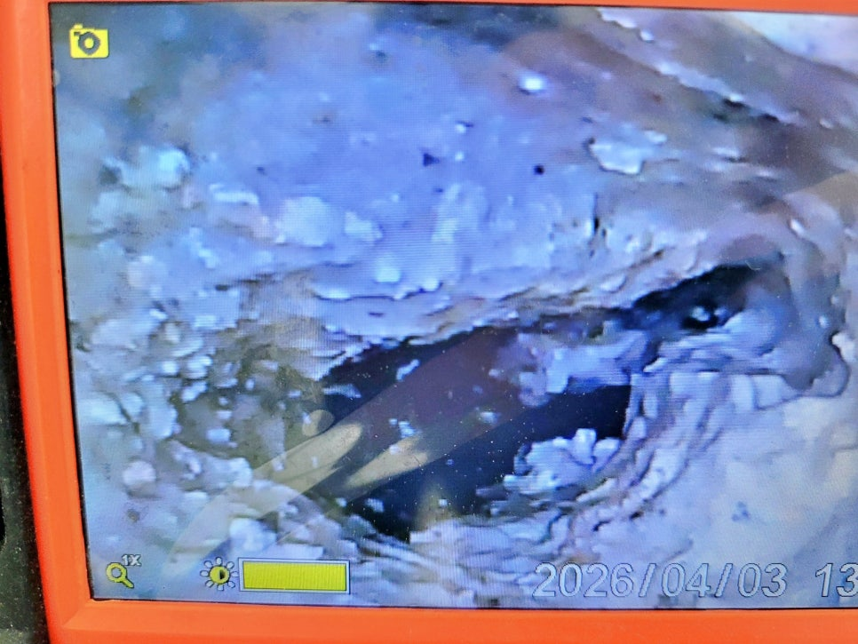
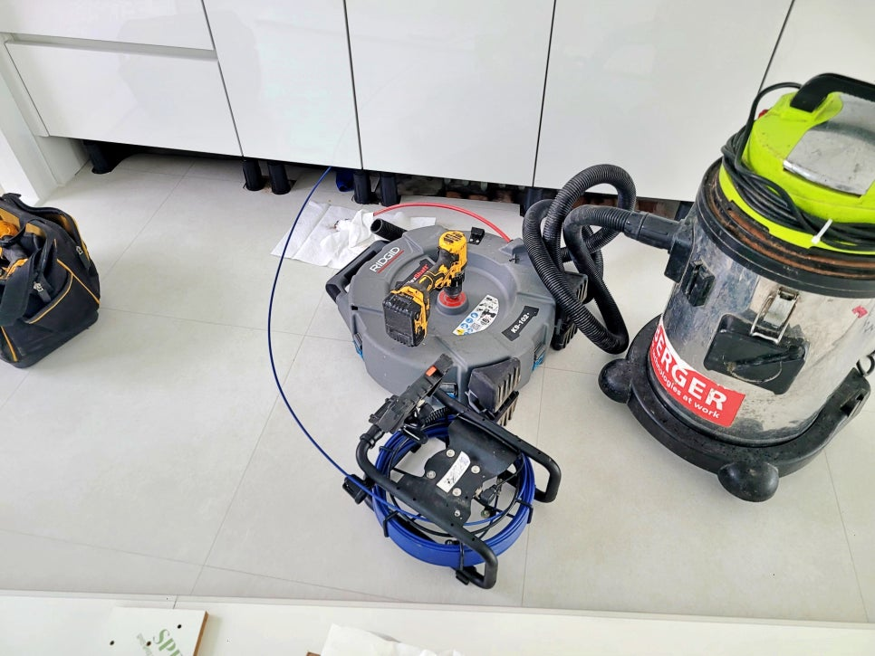
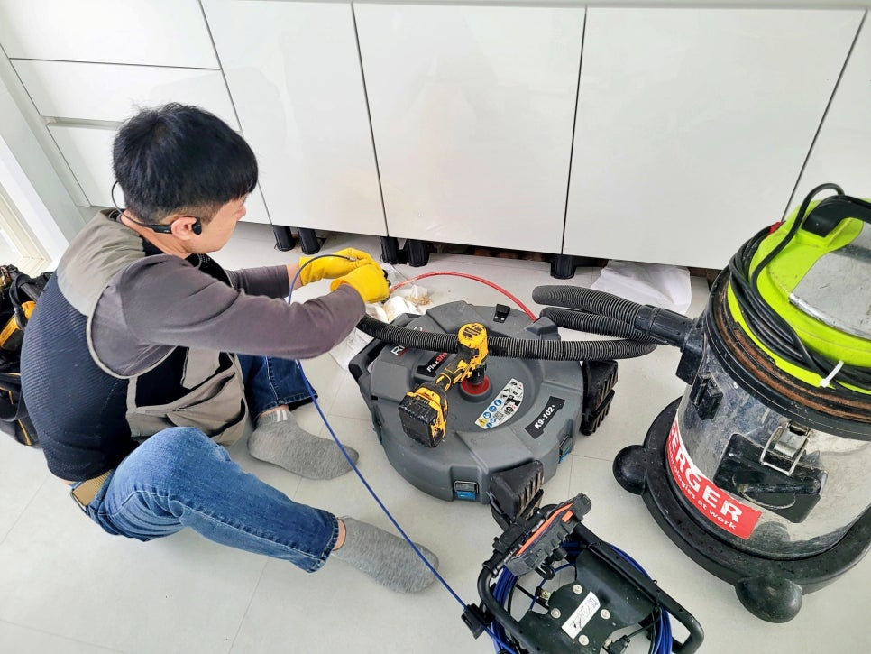
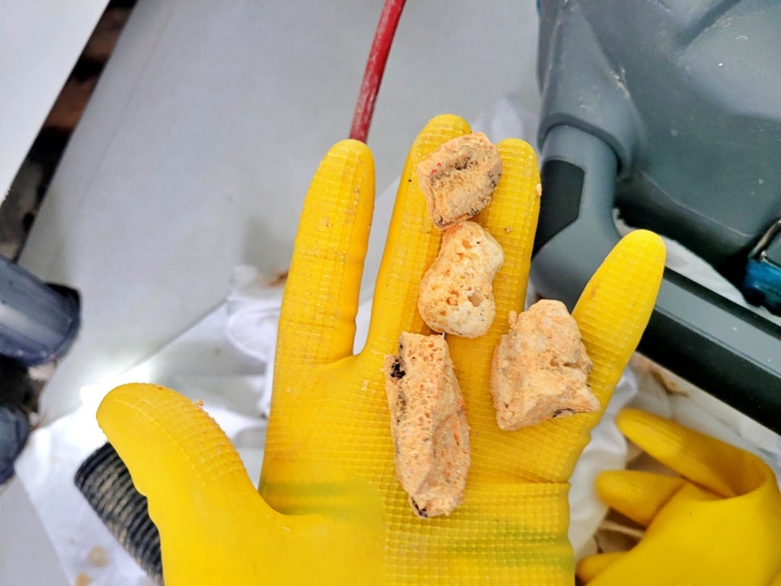
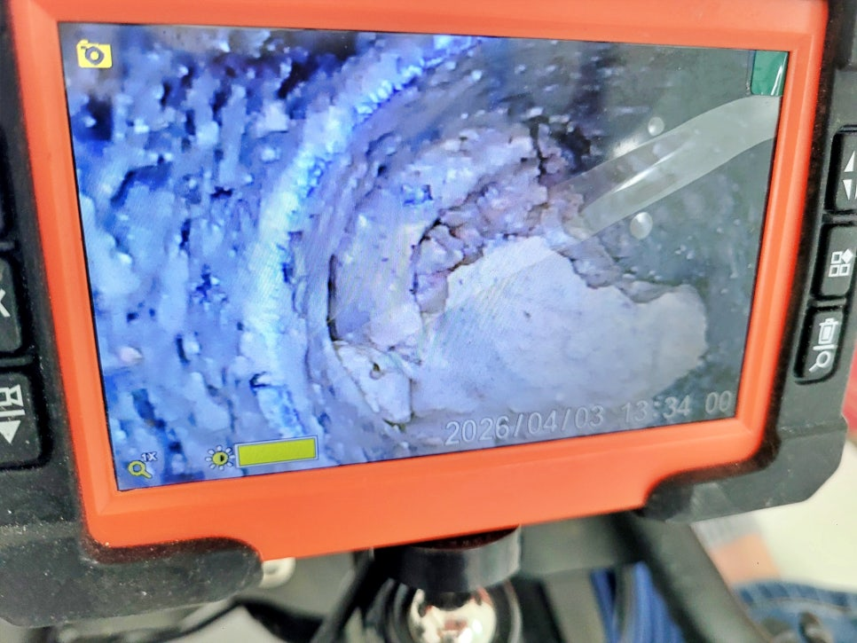
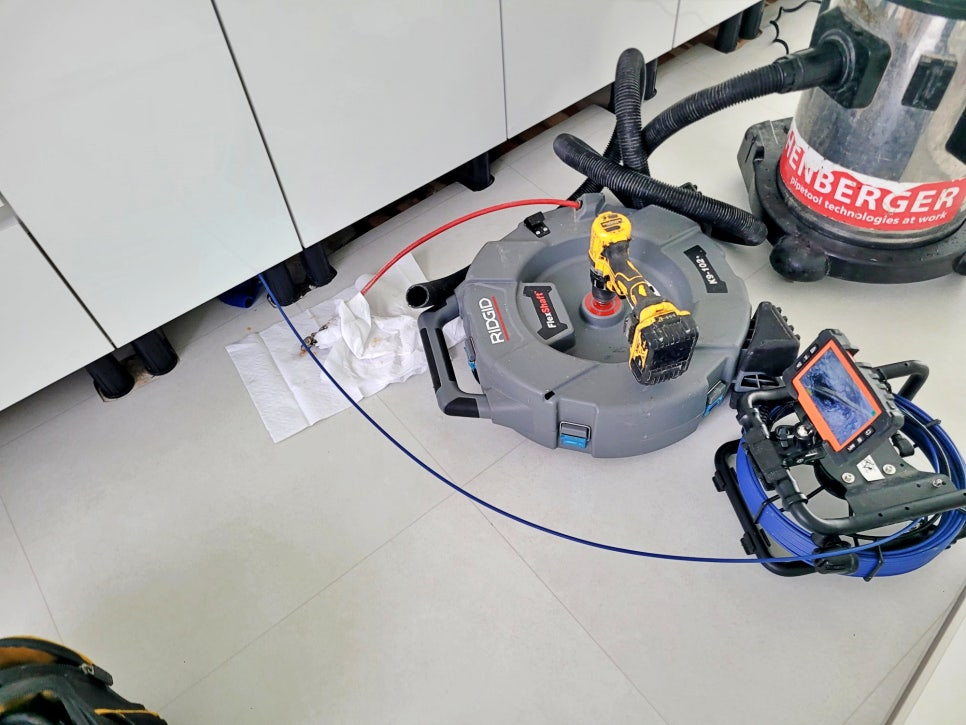

🏠 권선구 고색동 세탁실 배수구막힘으로 주방 바닥 배관에서 물 올라옴
수원 고색동 싱크대막힘 전문 시공 후기

📋 작업 개요
- 위치: 수원 고색동, 고색동, 수원
- 서비스 유형: 싱크대막힘, 하수구막힘, 배관막힘, 역류해결, 뚫는업체, 배관청소, 고압세척
- 작업 일시: 2026. 5. 4. 16:17
- 업체명: 하수구수사대 (010-5615-2118)
🔍 문제 상황
권선구 고색동 세탁실 배수구막힘으로
주방 싱크대 바닥 배관에서 역류하는
원인 해결
안녕하세요.
권선구 고색동 세탁실 배수구막힘
배관청소 전문업체 하수구수사대입니다.
오늘 소개할 현장은 수원 권선구 고색동에
위치한 아파트에서 세탁기를 사용하거나
싱크대물이 한꺼번에 내려갈 때
싱크대 쪽으로 물이 올라오는 문제로
방문드린 사례인데요.
세탁실 배수구막힘 내시경 점검 화면
현장에 도착해 증상을 들어보니
평소에는 큰 문제가 없다가 물 사용량이
많아지는 순간에만 역류가 나타나는
상태였습니다. 이런 경우 단순 배수구
문제보다 하수구 배관 안쪽 정체를
함께 살펴봐야 합니다.

🔎 원인 분석
💡 전문가 진단: 권선구 고색동 세탁실 배수구막힘으로주방 싱크대 바닥 배관에서 역류하는원인 해결
고색동 세탁실 배수구막힘 현장 개요
위치 : 수원 권선구 고색동 아파트
증상 : 세탁기 사용 시 싱크대 배관 역류
원인 : 긴 배관 내부 기름기와 찌꺼기 적체
작업 : 내시경 점검, 석션, 샤프트 배관청소
주방 싱크대 배수구 샤프트 작업
세탁실 배수구만 막힌 것으로 보일 수
있지만, 실제로는 주방 싱크대 배관과
연결된 긴 라인에서 물 흐름이 둔해진
상태였습니다. 배관이 길수록 중간에
기름기와 세제 찌꺼기가 달라붙기 쉽고,
시간이 지나면 통수 공간이 좁아집니다.
싱크대 배수구에서 나온 기름 덩어리
권선구 고색동 세탁실 배수구막힘 현장에서
내시경으로 내부를 살펴보니 배관 벽면에
기름때가 두껍게 붙어 있었고, 일부 구간은
찌꺼기가 뭉쳐 물길을 방해하고 있었습니다.
사진처럼 덩어리진 이물질이 빠져나오면서
막힘 원인이 뚜렷하게 드러났는데요.
🔧 작업 과정
싱크대 하수구 배관 내부 상태 점검
먼저 석션 장비로 배관 안에 고여 있던
오염물과 잔여물을 흡입했습니다. 이후
샤프트 장비를 투입해 배관 벽면에 붙은
기름기를 긁어내며 통수 공간을 넓혀
나가는 방식으로 작업을 이어갔습니다.
샤프트 장비를 이용한 배관청소 과정
싱크대 배관 막힘은 입구만 뚫고 끝내면
다시 반복될 가능성이 높습니다. 특히
이번처럼 싱크대 배수와 세탁기 배수가
함께 영향을 주는 구조라면, 하수구 배관
깊은 구간까지 충분히 세척해야 합니다.
내시경 화면으로 재점검 중인 배관
작업 중간마다 내시경 화면을 보며
배관 벽면의 잔여물 상태를 살펴봤습니다.
처음에는 기름막과 이물질 때문에 내부가
거칠게 보였지만, 청소가 진행될수록
배관 본래의 흐름이 살아나는 모습이
나타났습니다.
배관청소 후에는 세탁기 사용 상황과
싱크대 물을 한꺼번에 배수하는 상황을
가정해 물을 충분히 흘려보냈습니다.
배수 테스트 과정
싱크대 쪽으로 물이 올라오던 증상은
사라졌고, 배수 속도도 안정적으로
회복된 모습이 나타났습니다.
권선구 고색동 배관청소 마무리 현장
이번 권선구 고색동 세탁실 배수구막힘
현장은 긴 배관 안에 쌓인 기름기와


✅ 작업 완료
찌꺼기가 원인이었던 사례였는데요.
하수구수사대는 내시경으로 원인을
살피고, 석션과 샤프트 장비를 함께
사용해 재발 가능성을 줄이는 방향으로
작업을 마무리했습니다.
지금까지
배관청소 현장을 정독해 주셔서 감사합니다.
#권선구고색동세탁실배수구막힘 #권선구고색동배관청소 #수원세탁실배수구막힘 #고색동싱크대하수구막힘 #권선구세탁실물올라옴 #권선구싱크대역류 #고색동하수구배관청소 #고색동기름때배관막힘 #고색동아파트배수구막힘 #하수구수사대




⚠️ 주방 싱크대 배관 막힘 예방 수칙
- ✅ 기름기가 묻은 식기나 프라이팬은 설거지 전 키친타올로 반드시 기름때를 닦아내세요.
- ✅ 주기적으로 싱크대 개수대에 뜨거운 물을 가득 받아 한 번에 내려 배관 내부 기름을 씻어내세요.
- ✅ 배수구 거름망을 미세한 필터로 사용하시고 음식물 찌꺼기가 틈으로 새어 들지 않게 관리하세요.
- ✅ 베이킹소다와 식초를 뜨거운 물과 함께 일주일에 한 번씩 부어주면 배관 살균과 막힘 예방에 좋습니다.
💡 핵심 정리
- 확실한 장비 작업(내시경 점검 및 샤프트 스케일링)으로 원인을 뿌리 뽑습니다.
- 작업 후 1년 이내에 동일한 부위 재발 시 100% 무상 A/S 서비스를 보장합니다.
- 서울 · 경기 · 인천 전 지역에 24시간 언제든 긴급 출동할 수 있도록 항시 대기 중입니다.
❓ 자주 묻는 질문 (FAQ)
🚨 수원 고색동 싱크대막힘 문제로 고민이신가요?
정확한 원인 진단과 확실한 시공으로 재발 없는 해결을 약속드립니다.
24시간 긴급 출동 | 서울 · 경기 · 인천 전지역 | 1년 내 재발 시 무상 A/S